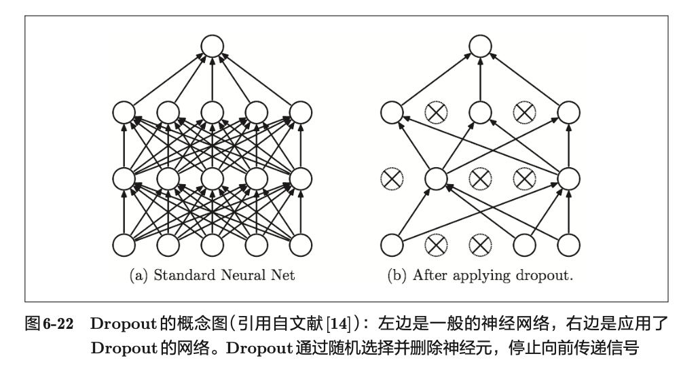

与学习相关的技巧
参数的更新
神经网络的学习的目的是找到使损失函数的值尽可能小的参数。解决这个问题的过程称为最优化 （ optimization ）。
SGD
使用参数的梯度，沿梯度方向更新参数，并重复这个步骤多次，从而逐渐靠
近最优参数，这个过程称为随机梯度下降法 （ stochastic gradient descent ），
简称 SGD
需要更新的权重参数记为W，把损失函数关于W的梯度记为 。
η 表示学习率，实际上会取 0.01 或 0.001 这些事先决定好的值.式子中的←表示用右边的值更新左边的值。
import numpy as np |
[[1. 2.]
[3. 4.]]
[[0.999 1.999]
[2.999 3.999]]
SGD的缺点
SGD 的缺点在于它使用相同的学习率更新所有参数。实际上，不同参数的更新幅度往往不同。如果函数的形状非均向（ anisotropic ），比如呈延伸状，搜索
的路径就会非常低效。
Momentum
W 表示要更新的权重参数， 表示损失函数关于 W 的梯度，η 表示学习率。这里新出现了一个变量 v，对应物理上的速度。
αv 这一项。在物体不受任何力时，该项承担使物体逐渐减速的任务（ α 设定为 0.9 之类的值），对应物理上的地面摩擦或空气阻力。
class Momentum: |
AdaGrad
学习率衰减 （ learning rate decay ）的方法，即随着学习的进行，使学习率逐渐减小。
AdaGrad 会为参数的每个元素适当地调整学习率，与此同时进行学习（ AdaGrad 的 Ada 来自英文单词 Adaptive，即“适当的”的意思）。
W 表示要更新的权重参数， 表示损失函数关于 W 的梯度，η 表示学习率。这里新出现了变量 h,它保存了以前的所有梯度值的平方和在更新参数时，通过乘以
，就可以调整学习的尺度。这意味着，参数的元素中变动较大（被大幅更新）的元素的学习率将变小。也就是说，可以按参数的元素进行学习率衰减，使变动大的参数的学习率逐渐减小。
class AdaGrad: |
Adam
Adam 是 2015 年提出的新方法。它的理论有些复杂，直观地讲，就是融合了 Momentum 和 AdaGrad 的方法。通过组合前面两个方法的优点，有望实现参数空间的高效搜索。此外，进行超参数的“偏置校正”也是 Adam 的特征。
SGD 或者 Adam 为经常使用的方法
权重的初始值
可以将权重初始值设为0吗
为了防止“权重均一化”（严格地讲，是为了瓦解权重的对称结构），必须随机生成初始值。
隐藏层的激活值的分布
在深度神经网络中，随着层数的增加，隐藏层的激活值（神经元的输出值）的分布会发生变化。如果分布过于集中在某个范围内，可能会导致梯度消失或梯度爆炸的问题，从而影响学习效果。因此，选择合适的权重初始值对于保持激活值的分布稳定非常重要。
ReLU的权重初始值
对于使用ReLU激活函数的神经网络，常用的权重初始化方法是He初始化（He initialization）。这种方法考虑了ReLU的特性，能够有效地保持激活值的方差。
在神经网络的学习中，权重初始值非常重要。很多时候权重初始
值的设定关系到神经网络的学习能否成功。权重初始值的重要性容易被忽视，
而任何事情的开始（初始值）总是关键的
Batch Normalization
为了使各层拥有适当的广度，“强制性”地调整激活值的分布
会怎样呢？实际上，Batch Normalization[11] 方法就是基于这个想法而产生的。
Batch Normalization 的基本思想是在每一层的激活值上进行归一化处理，使其均值为0，方差为1。这样可以减轻内部协变量偏移（internal covariate shift）的问题，从而加速训练过程并提高模型的性能。
正则化
权值衰减
权值衰减是一直以来经常被使用的一种抑制过拟合的方法。该方法通过
在学习的过程中对大的权重进行惩罚，来抑制过拟合。很多过拟合原本就是
因为权重参数取值过大才发生的。
为损失函数加上权重的平方范数（ L2 范数）。这样一来，就可以抑制权重变大。
用符号表示的话，如果将权重记为 W，L2 范数的权值衰减就是 ，然
后将这个 加到损失函数上。这里，λ 是控制正则化强度的超参数。λ
设置得越大，对大的权重施加的惩罚就越重。此外， 开头的
是用于
将 的求导结果变成 λW 的调整用常量。
对于所有权重，权值衰减方法都会为损失函数加上 。因此，在求权
重梯度的计算中，要为之前的误差反向传播法的结果加上正则化项的导数λW。
Dropout
如果网络的模型变得很复杂，只用权值衰减就难以应对了。在这种情
况下，我们经常会使用 Dropout 方法。
Dropout 是一种在学习的过程中随机删除神经元的方法。训练时，随机
选出隐藏层的神经元，然后将其删除。被删除的神经元不再进行信号的传递

{kind=link}
class Dropout: |
这里的要点是，每次正向传播时，self.mask中都会以 False的形式保
存要删除的神经元。self.mask会随机生成和 x形状相同的数组，并将值比
dropout_ratio大的元素设为 True。反向传播时的行为和 ReLU 相同。也就是说，
正向传播时传递了信号的神经元，反向传播时按原样传递信号；正向传播时没有传递信号的神经元，反向传播时信号将停在那里。
超参数的验证
超参数是指，比如各层的神经元数量、batch 大小、参
数更新时的学习率或权值衰减等。如果这些超参数没有设置合适的值，模型
的性能就会很差。虽然超参数的取值非常重要，但是在决定超参数的过程中
一般会伴随很多的试错。
验证数据
调整超参数时，必须使用超参数专用的确认数据。用于调整超参
数的数据，一般称为验证数据 （ validation data ）。
训练数据用于参数（权重和偏置）的学习，验证数据用于超参数的性能评估。为了确认泛化能力，要在最后使用（比较理想的是只用一次）测试数据。
超参数的最优化
步骤0
设定超参数的范围。
步骤1
从设定的超参数范围中随机采样。
步骤2
使用步骤 1 中采样到的超参数的值进行学习，通过验证数据评估识别精
度（但是要将 epoch 设置得很小）。
步骤3
重复步骤 1 和步骤 2 （ 100 次等），根据它们的识别精度的结果，缩小超参
数的范围。
反复进行上述操作，不断缩小超参数的范围，在缩小到一定程度时，从
该范围中选出一个超参数的值。